J2000 Epoch
12:00 noon UTC on January 1, 2000 — the universal anchor moment astronomers use to date orbital elements.

101 · zoom in
Orbits drift. Slowly — over centuries — but enough that you can't just say "Mars's orbit has eccentricity 0.0934" without saying "as of when." Astronomers needed an agreed-upon zero point in time, the same way map-makers needed an agreed-upon zero meridian (which is why Greenwich exists). They picked noon UTC on January 1, 2000. That's J2000.
Why noon, not midnight? Because the Julian Day count — astronomers' running tally of days since 4713 BC — has always ticked over at noon, not midnight, so observers don't have to handle a date change in the middle of the night's work. J2000 corresponds exactly to Julian Day 2,451,545.0 — a clean integer reference.
Every orbit you see in this simulator is anchored to J2000. Earth's mean longitude at J2000. Mars's argument of periapsis at J2000. The planet positions you watch animate in /explore are extrapolated forward (or backward) from J2000 using simple linear math: "start here, advance at this rate, here's where you are now." Pick any date in history and the orrery can tell you where the planets were.
Orbital elements drift over time — perturbations from other planets nudge eccentricity, longitudes precess, inclinations wobble. To make a planet's elements meaningful, you have to say 'as of when.' The standard answer is J2000: noon UTC on January 1, 2000. Orbits are quoted at that moment; propagation forward or backward uses analytical or numerical models.
Why noon? Because Julian Date (JD) — the astronomers' continuous day count starting at noon UTC on January 1, 4713 BC — increments at noon, not midnight. J2000 corresponds exactly to JD 2,451,545.0, a clean reference point with no fractional days.
Orrery's planet data uses J2000 elements throughout. The mean longitude `L₀` field in `/explore` panels is the planet's heliocentric position angle at J2000. From there, mean motion `n = 2π / T` advances `L` linearly to any other epoch — modulo small perturbations the simulator ignores.
SEE IN THE APP
- /explore Every planet's L₀ is the mean longitude at J2000 epoch